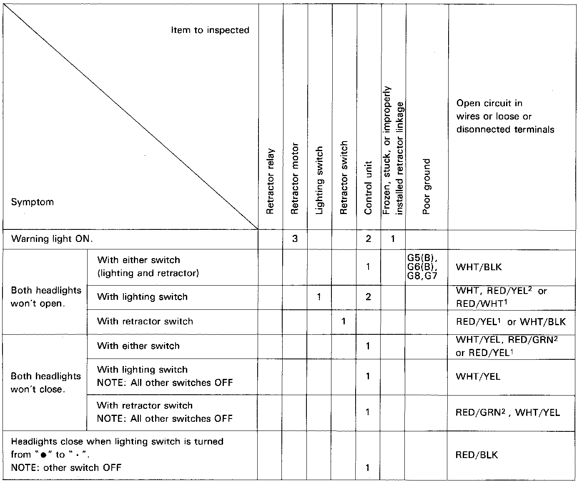

Headlamp: Testing and Inspection

Symptom Chart
Function: The retractor motors are controlled by their respective relays. The relays are energized by power to either the up-wire (WHT/BLK) or down-wire (WHT/YEL), through the slip ring in the retractor motors. The up-wire can be powered either by the headlight switch/control unit or via the retractor switch directly. The down-wire can only be powered by the control unit via either the headlight switch or the retractor switch. The control unit also senses any abnormality in the way the retractor motors operate and warns the driver by illuminating the warning light in the gauge assembly.
Note: The numbers in the table show the troubleshooting sequence.
- Before troubleshooting:
- Check the No.1, 10(7.5A), No.4 (15A and No.12 (15A) fuses in the dash fuse box.
- Check the No.24 and 25 (15A) fuses in the fuse holder.